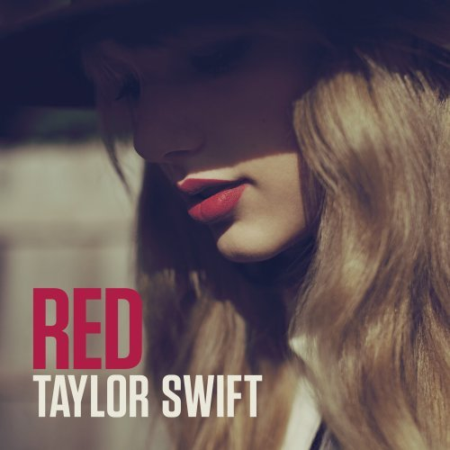

Taylor Swift (aka Debut)

Released: October 24, 2006
Genre: Country/Pop Country
Debut peaked at #5 on the U.S. Billboard 200 list and spent 157 weeks there.
It was the first studio album of its kind, in that no other teenaged singer was on the market singing to other teens from the teen point of view.
While it's not my personal favorite album, Taylor Swift is a great debut and some of the songs are really fun.
"Tim McGraw" is a classic, and the indie cover done by Maggie Rogers really gets at the essense of what I think Swift was going for.
"Our Song," an absolute bop, perfectly captures being youthfully lovestruck.
Honorable mention goes to "Picture to Burn," after it was re-released to swap out a homophobic line ("So go and tell your friends that I'm obsessive and crazy, that's fine I'll tell mine that you're gay you won't mind if I say...").
Fearless

Released: November 11, 2008
Genre: Country/Pop Country
Taylor Swift's second studio album, Fearless, has a similar pop country vibe to Taylor Swift and serves as her breakout album,
winning Album of the Year at both the Country Music Association Awards and the Academy of Country Music Awards,
as well as winning both Album of the Year and Best Country Album at the 2010 Grammy Awards.
Though it was incredibly well-received, Fearless might be my least favorite Taylor Swift album.
The storytelling (which Swift has always been well-known for) is fantastic, but overall the album just doesn't really hit for me.
That said, "Love Story," "You Belong With Me," and "You're Not Sorry" were, and continue to be, my favorite tracks.
Speak Now

Released: October 25, 2010
Genre: Pop Country
Speak Now is where shit starts to get real (excuse my French).
Taylor Swift's thrid studio album is when she really began to experience wider acclaim outside the country and pop country genres.
Longer and more personal than her previous two albums, Speak Now was written entirely by Swift herself.
The list of notable tracks from the album is miles long (a tribute to Swift's imepeccable songwriting capabilities):
"Mine," "Sparks Fly," "Back to December," "Dear John," and "The Story of Us."
But for me, there are two standouts:
- "Enchanted," with a driving beat that leads to a visceral guitar solo, followed by an earnest bridge and heartwrenching breakdown before returning to the wonder-striking chorus, it's the epitome of every young lover's first crush that feels like actual true love.
- "Haunted" is an angsty-rock track, and indicative of future bangers like the "We Are Never Getting Back Together" performance from her Reputation Stadium Tour. This track also features an anxious string section, which this former violinist completely adores.
Track six, "Mean," received a ton of radio play, but was never a personal favorite of mine—it always felt a little childish in its twangy, faux-country pettiness.
Red

Released: October 22, 2012
Genre: Pop/Pop Country/Pop Rock
Red would have been an entirely pop album if Swift's label hadn't been horrible, but that's a story for another web page.
Nevertheless, this is the album that truly began to crossover into pop, and gave us bops like "I Knew You Were Trouble," "22," and "We Are Never Ever Getting Back Together."
This is also the album that tore out all of our hearts with the infamous track five, "All Too Well," written about a man who shall remain nameless, but can be conjured through the use of the red scarf emoji on any social media platform.
Other notable tracks (and there are many) include the title track, "Red," "State of Grace," "Holy Ground," "Everything Had Changed," featuring Ed Sheeran, and "Begin Again."
Red is quintessential autumn vibes, best listened to in the car while driving down a rain-dampened road lined with luscious red and orange foliage.
1989

Released: October 27, 2014
Genre: Pop
1989 was Swift's first fully pop studio album, and WOW did it deliver!
Well known for its synth-pop sounds, this is by far my favorite album and, in my opinion, her only album with zero skips (including tracks form the deluxe version).
The worst song on the album is probably also one of the most popular—"Shake It Off."
It's catchy and got way too much radio play, which made me kind of hate it, but I liked it when I first heard it and it's my web page, so it doesn't count as a skip (even though I usually skip it these days).
Since all the tracks are amazing, instead of listing out a handful, I'll just make a list of my personal rankings:
- "Out of the Woods" - one of my favorite songs of ALL TIME
- "Style"
- "Wildest Dreams"
- "Clean"
- "Blank Space" - Starbucks lovers, amiright?!
- "I Know Places"
- "Wonderland" - from the deluxe edition
- "All You Had to Do Was Stay"
- "How You Get the Girl"
- "I Wish You Would"
- "You Are in Love" - from the deluxe edition
- "New Romantics" - from the deluxe edition
- "Welcome to New York" - unpopular opinion, idc about NY
- "This Love"
- "Bad Blood" - overplayed almost as much as "Shake It Off"
- "Shake It Off"
reputation

Released: November 10, 2017
Genre: Pop
Ah, the snake era. With electropop and R&B inspirations riddled throughout, this may be Swift's moodiest album.
reputation goes from hard and edgy to sweet and delicate (and back around again) quick enough to give you whiplash.
This is another album on which there are very few skips for me.
"Look What You Made Me Do" is a little repetitive, but still a banger.
"So It Goes...," "King of My Heart," and "Dancing With Our Hands Tied" don't do much for me, but I also don't actively dislike them.
Every other track is killer, but if I had to choose my favorites they'd be:
"Don't Blame Me," "Delicate," "Dress," "Call It What You Want," and "New Years Day."
Lover

Released: August 23, 2019
Genre: Pop
Important to note is that Lover is Swift's first studio album after parting with her previous label Big Machine Records.
Much brighter and more free-spirited than its predecessor Reputation, Lover attempts to explore all the facets of love—everything from infatuation and lust to contentment and disillusionment.
The lead single from the album, "Me!," was an interesting choice. I personally would have gone with "I Forgot That You Existed" or "Cruel Summer."
There were a lot of other dope tracks on Lover as well, including the title track, "Lover," "Cornelia Street," "False God," "Afterflow," and "Daylight."
folklore

Released: July 24, 2020
Genre: Alternative/Indie
Dropped completely by surprise during the early days of the COVID-19 lockdown, folklore was Swift's first studio album featuring an indie folk sound.
Dreamy, lyrical, and imaginative, this was exactly the album many people needed mid-pandemic. Swift's lyricism on this project have been likened to what a high-achiever might dream up as a senior thesis for AP English.
I wasn't immediately obsessed with folklore when it dropped (I guess my lockdown days were spent in a less daydreamy state), but now I appreciate it for the genius it is.
The first five tracks hook you one after another, and there's no shortage of tearjerkers and heartwrenchers throughout the rest of the album.
The storytelling in "the last great american dynasty" is unparalleled, "mad woman" has an incredible message, and "exile" featuring Bon Iver is truly gorgeous, but "peace" is probably my favorite track of the whole thing.
evermore

Released: December 11, 2020
Genre: Folk Pop/Alternative Rock
If folklore represents AP English, evermore, which dropped less than five months later, is AP Creative Writing.
While Swift's ninth studio album is a surefire folk-pop, alt-rock dreamscape, it isn't entirely my cup of tea.
That said, there were a hanful of tracks I loved including the first three on the album: "willow," "champagne problems," and "gold rush," as well as "no body, no crime" featuring HAIM.
My favorite track by far is "tolerate it," a minimally-produced, haunting song about being in love with someone who only tolerates you in return.
The Re-recording Era
Due to Taylor Swift's original label, Big Machine Records, being run by a dirtbag of a human whose name shan't be shared here, and the implications of that, Swift ultimately made the decision to re-record her first six albums so that she could actually own all her own music.
She can only re-record after a certain amount of time has passed since the original album release date, so there have only been two albums re-recorded at this time.
Notably, Swift re-released Fearless (Taylor's Version) first, skipping her debut album Taylor Swift for the time being.
Red (Taylor's Version) is the newest re-release, but there are a lot of easter eggs hinting that Speak Now (Taylor's Version) will be dropping soon.
Fearless (Taylor's Version)

Released: April 9, 2021
Genre: Country/Country Pop
The first album re-recorded and re-released by Swift, Fearless (Taylor's Version) was a landmark achievement.
Swift re-recorded all nineteen tracks from the platinum edition of the original studio album as well as the 2010 soundtrack single "Today Was A Fairytale,"
and six bonus tracks "from the Valut" that were left on the cutting room floor during the first recording.
The re-release was met with critical acclaim and a massive amount of nostalgic and support from fans across the world.
Fearless (Taylor's Version) was the first ever re-recorded album to reach number one on the Billboard 200 chart, and it became the best-selling album released in 2021.
The original Fearless didn't really spark joy for me so, while I fully supported Swift by listening to the album, it wasn't a momentous occassion for me,
and I feel the same about most of the tracks on the re-record as I did on the original album.
Red (Taylor's Version)

Released: November 12, 2021
Genre: Pop
Red (Taylor's Version) includes re-recorded versions of 20 songs from the deluxe edition of the original in addition to her charity single, "Ronan."
The re-recorded album also contains six "from the Vault" tracks that were cut from the original album and Swift's own versions of "Better Man" and "Babe," both of which she wrote but which were recorded and released by Little Big Town and Sugarland, respectively.
Hands down my favorite track is the 10-minute version of "All Too Well," and the accompanying 14-minute short film starring Sadie Sink and Dylan O'Brien.
They're life-changing and put some very useful perspective on the flow of the album, which felt a little unclear during the original release.
Truthfully the whole album is amazing (with the exception of the roller coaster-esque "we!" in "We Are Never Getting Back Together").
The re-recording of "Girl At Home" is very 80s pop-synth inspired, which I adore, and "I Bet You Think About Me" features Chris Stapleton, one of my favorite country music singers.
Notable mention goes to "Babe," a cute little bop, and generally to Swift's more mature vocals, which can better handle the high notes and belts on many of the tracks.